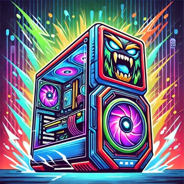

Kjøpsguide
Velkommen til den ultimate kjøpsguiden! Her finner du en 100 % realistisk oversikt over de beste datamaskinene for ulike behov, med anbefalte spesifikasjoner.
Enkel laptop - For nettlesing og kontorarbeid
Perfekt for studenter og arbeidere som trenger en lett og pålitelig maskin til e-post, dokumentredigering og nettsurfing.
- CPU: Intel Core i3 eller AMD Ryzen 3
- RAM: 8GB DDR4
- Lagring: 256GB SSD
- Skjerm: 14" Full HD
Gaming-PC - Kraftig maskin for spill
For deg som ønsker å spille spill som Call of Duty Black Ops 6 uten lag eller forsinkelser! En gaming-PC med topp GPU og rask CPU sikrer en jevn og kraftig ytelse.
- CPU: Intel Core i7 eller AMD Ryzen 7
- RAM: 16GB DDR5
- GPU: NVIDIA RTX 4070 eller AMD Radeon RX 7800 XT
- Lagring: 1TB NVMe SSD
- Skjerm: 27" 144Hz, 1ms
Podcast/Dubbing-utstyr - Perfekt for innspilling
Et profesjonelt oppsett med mikrofoner, lydkort og støydemping for de som vil produsere innhold av høy kvalitet.
- Mikrofon: Shure SM7B eller Rode NT1
- Lydkort: Focusrite Scarlett 2i2
- Hodetelefoner: Audio-Technica ATH-M50X
- Støydemping: Akustiske paneler
Workstation-PC - For tunge oppgaver
En workstation-PC er laget for krevende oppgaver som videoredigering, 3D-modellering og programmering. Her får du kraftig ytelse og stabilitet.
- CPU: Intel Core i9 eller AMD Ryzen 9
- RAM: 32GB DDR5
- GPU: NVIDIA RTX 4090 eller AMD Radeon Pro W6800
- Lagring: 2TB NVMe SSD + 4TB HDD
- Skjerm: 32" 4K IPS